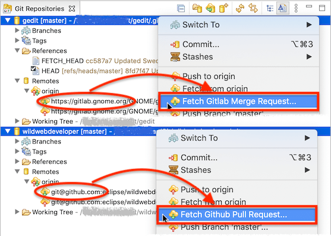
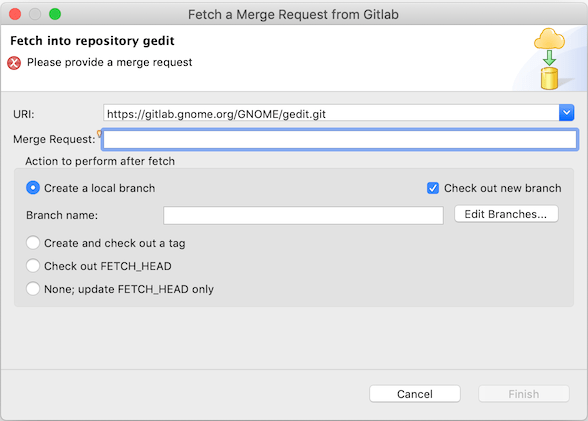
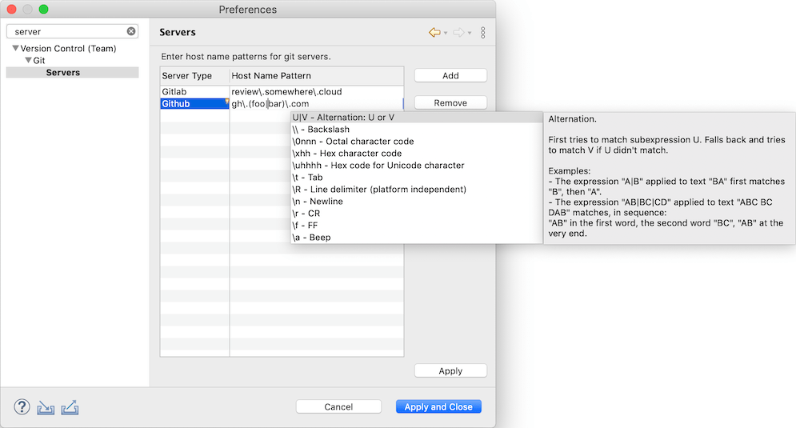
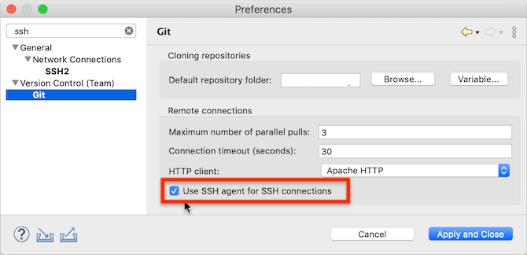

| EGit 6.0 New and Noteworthy | ||
|---|---|---|
|
|
||
| Contributors | ||
EGit 6.0 requires Java 11 to run. Previous versions required a minimum of Java 1.8.
The minimum Eclipse platform for EGit 6.0 is Eclipse 2020-09 (4.17). While previous versions could be installed on any Eclipse since Neon.3, EGit 6.0 will not install on Eclipse platforms older than Eclipse 2020-09. (Eclipse 2020-09 was the first Eclipse version that also required Java 11 to run.)
The last EGit version that uses Java 1.8 and that can be installed on Eclipse platforms as old as Neon.3 is EGit 5.13. There will be no new features in the EGit 5.x series.
EGit 6.0 has a new feature to fetch pull requests from Github or Gitlab. If a local repository has a remote pointing to Github or Gitlab, there are new commands Fetch Github Pull Request... or Fetch Gitlab Merge Request... in the context menus:

The command is also available in the Team→Remote sub-menu of the context menu in other views, for instance in the Package Explorer on Eclipse projects from a git repository managed by EGit.
The command opens a dialog to fetch a pull request (called "merge request" on Gitlab). Enter the pull request number, then choose what to do after having fetched it. By default, EGit proposes to create a new local branch for the pull request and then to check out that branch. The input field for the pull request number has content assist showing a list of all available pull requests.

If the user copied a pull request number or the web URL of a pull request before opening the dialog, the dialog automatically fills in that pull request number from the clipboard. So a simple workflow to fetch a pull request is:
Opening the dialog first, then copying the pull request number or web URL and pasting it into the dialog's input field also works.
EGit uses the normal git mechanisms for fetching pull requests; it does not use the REST APIs Github or Gitlab offer. It cannot know automatically whether a particular remote refers to a Github or Gitlab host: there is no API in the git protocols to detect what kind of server one connects to. EGit needs to know because the two kinds of servers publish pull requests slightly differently.
EGit thus uses simple host name pattern matching. If the host name in a remote URI is "github.com", it's a Github server, and the Fetch Github Pull Request... command is available. If the host name is "gitlab.com" or "gitlab.somedomain.com" or "gitlab.somedomain.org", it's a Gitlab server, and the Fetch Gitlab Merge Request... command is available.
To support private installations of GitHub Enterprise or Gitlab EE instances at arbitrary host names, users can define additional host name patterns at a new preference page at Preferences→Version Control→Git→Servers:

On this preference page one can define host name patterns and associate them with a git server type ("Github" or "Gitlab"). The fields in the table are editable. Patterns are Java regular expressions matching host names; during editing content assist giving hints about the regular expression syntax is available.
EGit 6.0 uses an SSH2 agent, if one is running, in SSH public-key authentication. On Windows, EGit supports Pageant, the SSH agent of PuTTY; on other operating systems it uses a Unix domain socket given via environment variable SSH_AUTH_SOCK, which is the normal mechanism used e.g. by the OpenSSH agent.
Use of an SSH agent can be switched on or off globally in EGit 6.0 via a new preference:

By default, this setting is switched on.
The EGit feature is completely independent of the agent settings in Preferences→Global→Network Connections→SSH2.
Some directives in the ~/.ssh/config file are not handled yet:
Support for these is planned for a future version as it needs upstream changes in the Apache MINA sshd library used by EGit and JGit for SSH communication.
Integration with a native keychain (the UseKeychain directive on Mac) is not supported.
EGit does not do agent forwarding. Use the ProxyJump directive in ~/.ssh/config instead.
EGit 6.0 includes some less noticeable improvements in the UI, plus a number of bug fixes. The complete list of new features and bug fixes is available in the release notes.
|
|
||
| Contributors |